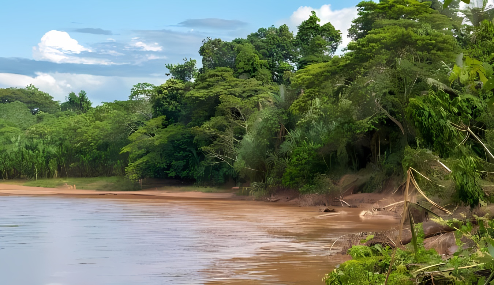
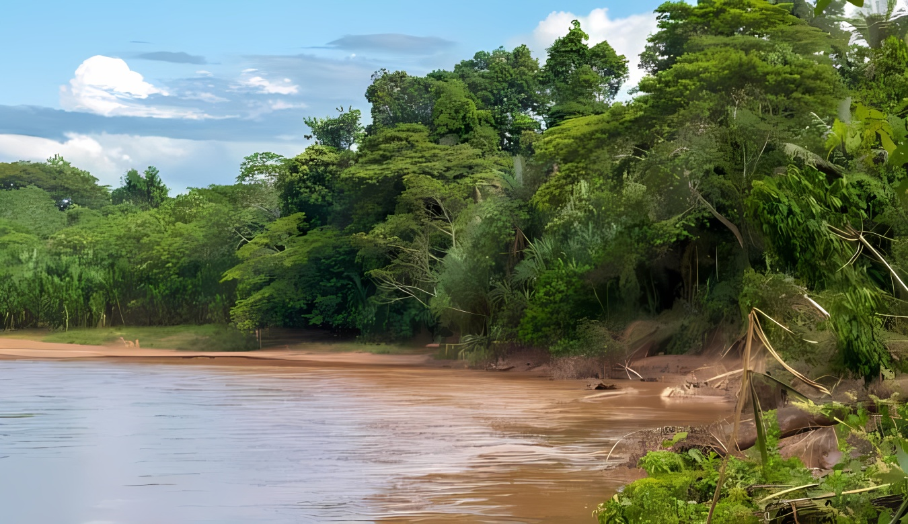

Incêndios na Floresta Amazônica aumentam pelo 3º mês seguido;
Uma seca prolongada em grande parte da América do Sul, ligada à mudança climática, causou incêndios mais intensos na Amazônia este ano.
Os incêndios na floresta amazônica brasileira atingiram o número mais alto para setembro em quase 15 anos, segundo dados preliminares do
governo divulgados nesta terça-feira (1º), depois de chegarem a altas semelhantes nos dois meses anteriores.
Seca extrema na Bacia Amazônica;
Em trechos significativos do rio Solimões, como Tabatinga, Fonte Boa e Coari, o nível do rio atingiu a
triste marca de ser o mais baixo da história.
Com o intuito de evidenciar os impactos das mudanças climáticas, que estão provocando uma estiagem sem precedentes
na Amazônia, o Greenpeace Brasil instalou um imenso banner no leito exposto do Rio Solimões, um dos principais rios do mundo, que
integra a Bacia Amazônica.
Rios da Bacia Amazônica registram níveis mais baixos da história;
Os rios da Bacia Amazônica enfrentam secas com níveis históricos. De acordo com o Serviço Geológico do
Brasil, as águas de rios como o Madeira, Rio Branco e o Solimões estão hoje em níveis mais baixos jamais vistos.
Nesta quarta-feira (11), por exemplo, a medição do Rio Madeira em Porto Velho, capital de Rondônia, caiu
para 69 centímetros, a menor desde que começou a ser registrada há mais de meio século. O governo do Estado está distribuindo
32 mil litros de água potável para mais de 200 famílias no entorno.
Defeso: Pesca do tambaqui nos rios da Bacia Amazônica fica proibida por seis meses;
A partir desta terça, 1º de outubro até 31 de março de 2025, ocorre o período de defeso do tambaqui na
Bacia Amazônica. Durante esses seis meses, a pesca da espécie está proibida, com a finalidade de preservação, manutenção
dos estoques e garantia de reprodução da espécie, que é uma das mais comercializadas na região.
Em Santarém, a Colônia de Pescadores Z-20 orienta seus associados a cessar a pesca de tambaqui de rio com
fins de comercialização, e os consumidores são incentivados a comprar peixes criados em cativeiro


 
